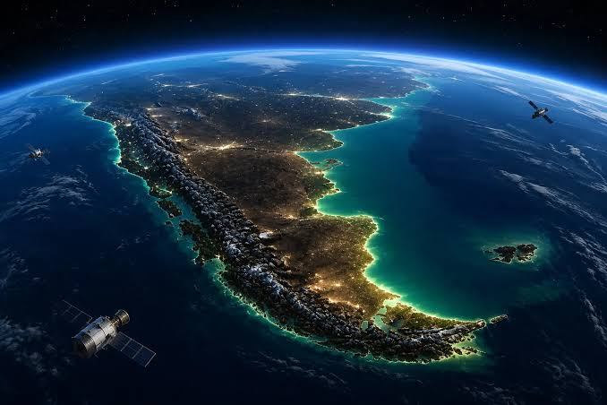

AMBIENTEVisor Ambiental
Información geográfica vinculada al ambiente, recursos naturales y características ambientales del territorio.
Explorar visor →Observación de la Tierra y herramientas para el análisis científico y tecnológico de la Provincia.
Accedé a herramientas cartográficas para explorar información territorial, ambiental, hidrológica, satelital y científica.

AMBIENTEInformación geográfica vinculada al ambiente, recursos naturales y características ambientales del territorio.
Explorar visor →.jpg) HIDROLOGÍA
HIDROLOGÍA
Información relacionada con cuencas, cursos de agua, recursos hídricos y análisis hidrológico.
Explorar visor →.jpg) TERRITORIO
TERRITORIO
Información territorial, urbana, infraestructura y componentes espaciales de la Provincia de Salta.
Explorar visor →.jpg) OBSERVACIÓN DE LA TIERRA
OBSERVACIÓN DE LA TIERRA
Imágenes satelitales, índices espectrales, productos derivados y análisis de cambios sobre el territorio.
Explorar visor →La Coordinación de Promoción y Desarrollo Científico y Tecnológico impulsa iniciativas orientadas a fortalecer el conocimiento, la innovación y el uso de herramientas tecnológicas para el desarrollo provincial.
La información geográfica y los datos constituyen herramientas fundamentales para comprender los procesos territoriales, ambientales y socioeconómicos de la Provincia.
Conocer novedades y actividades →